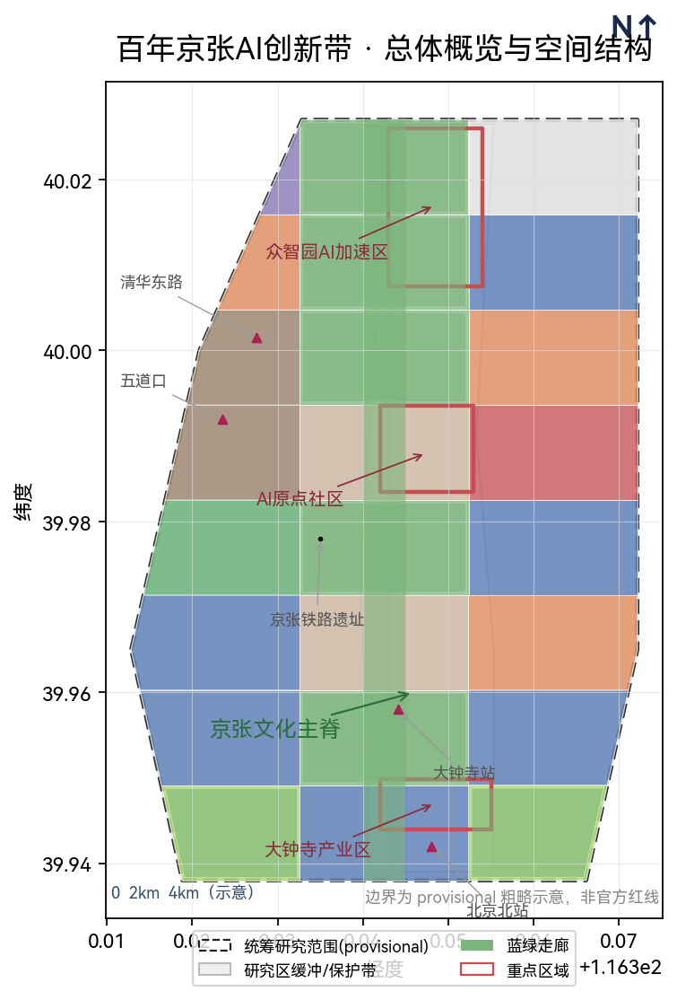
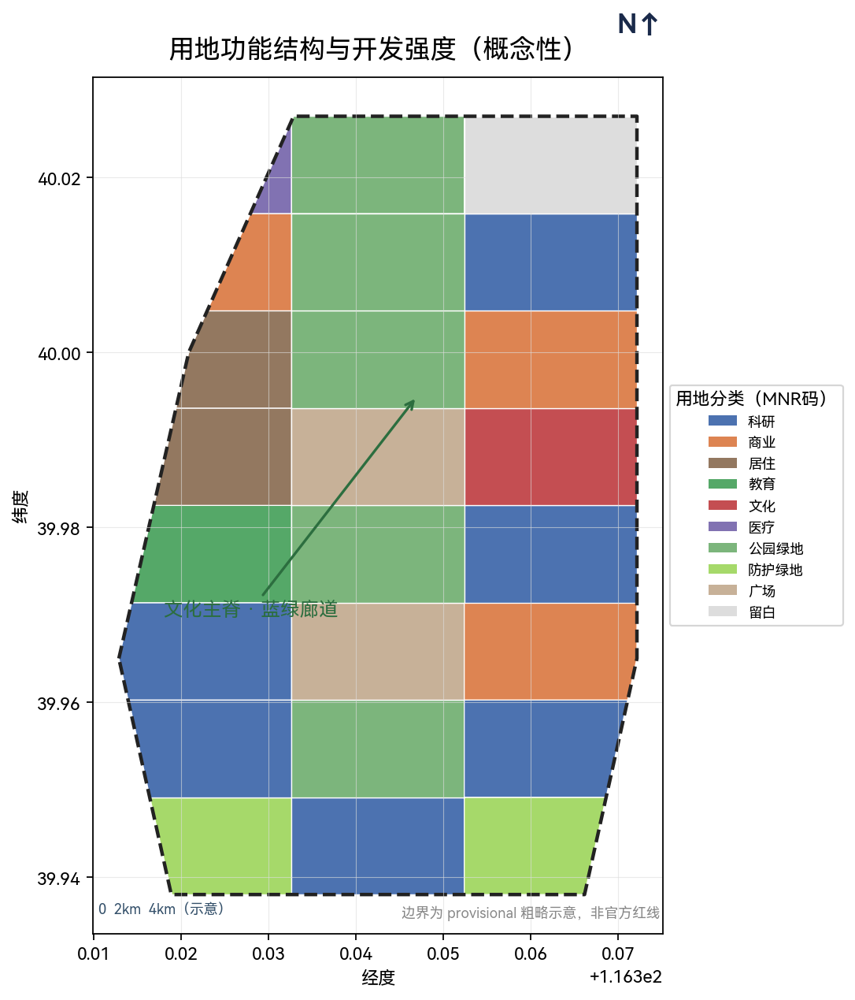
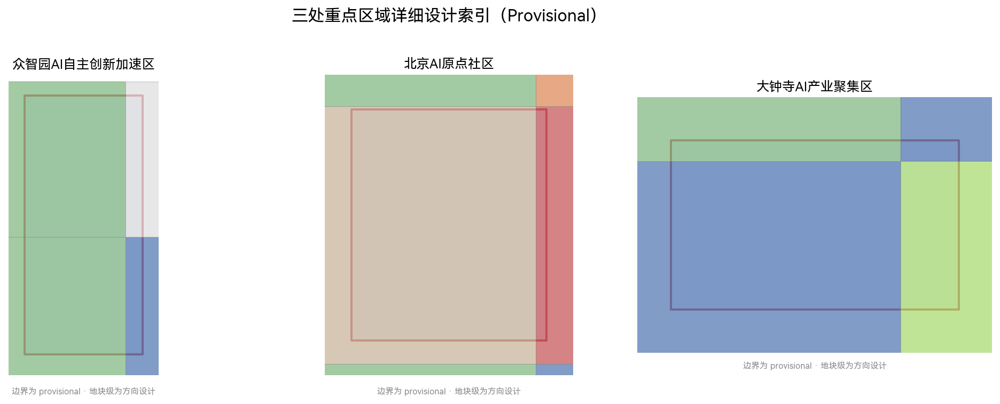
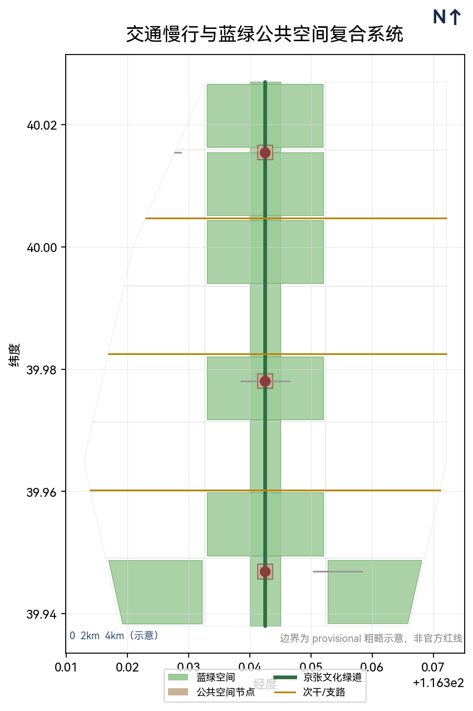
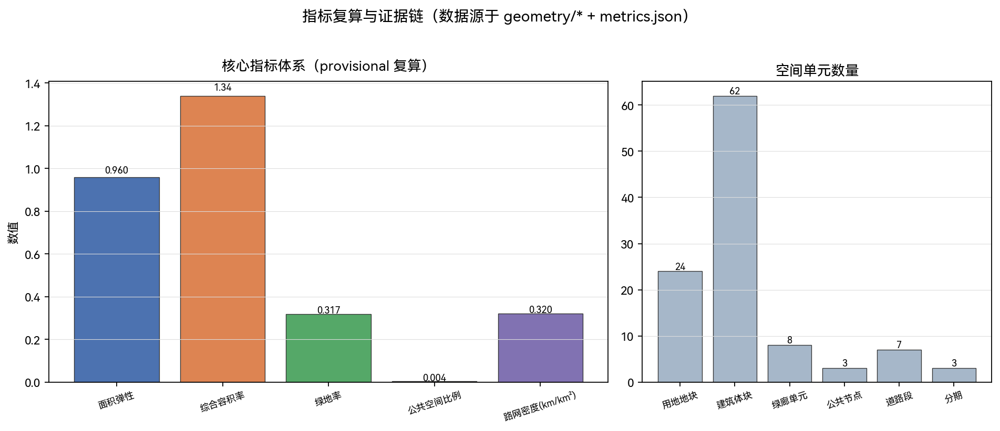

Centennial Jing-Zhang · Sentient Jingzhang — Integrated Design of Jing-Zhang Cultural Heritage and Civic AI-Agent Urban Governance
Taking the century-old Jing-Zhang Railway heritage as the cultural spine and civic agent governance as the operating core, this proposal presents an AI Innovation Belt city design structured around 'heritage consciousness + intelligent coordination + multi-party co-governance,' delivering machine-readable spatial data, indicator systems, and scenario cards as structured outputs that are reviewable, recomputable, and ready for further professional deepening.
Centennial Jing-Zhang · Sentient Jingzhang: Integrated Design of Jing-Zhang Cultural Heritage and Civic AI-Agent Urban Governance
Design Basis and Material List
This proposal builds on the Pre-Qualification Announcement for the International Urban Design Open Call for the Centennial Jing-Zhang AI Innovation Belt and the open-source Agent-facing taskbook 来源 来源, and is completed under the machine-readable design brief, design scope, land-use classifications, and indicator-interval constraints provided in the site package 来源. The announcement defines a three-tier spatial scope — a Coordinated Research Area of approx. 43.6 km², an Overall Design Area of approx. 11.4 km², and Key Areas totalling approx. 368.4 ha — together with three primary positionings (Centennial Jing-Zhang Cultural Belt, Urban AI Life Experience Belt, AI Integration Innovation Belt), five core functions, and a "three-zone, two-wing" synergistic framework.
It should be made explicit that, as of the retrieval date, official precise boundaries and certain industry, population, and facility data are not yet available through public channels. The spatial boundary used in this proposal is a provisional substitute boundary (see geometry/site_boundary.geojson and brief/site-package/geometry/provisional_boundaries.geojson), employed solely for concept generation, display, and provisional self-check, and does not represent official red lines. Once the official polygon is released, area, FAR, and related indicators must be recomputed against the official polygon [assumption:ASM-001] 标准.
The proposal narrative is written for human readers; the complete source, indicator, standard-coverage, and design-depth indices are available in sources.json, metrics.json, compliance_matrix.json, standard_matrix.json, and design_depth_matrix.json. Where official standard texts are referenced, the local repository snapshot is authoritative, to avoid reliance on external links alone 标准 标准.

Three-Scale Working Framework
This project adopts a three-scale spatial framework — Coordinated Research Area, Overall Design Area, and Key Area Scope — progressively cascading from the North 5th Ring Road toward Beijing North Station, with industrial strategy, overall urban design, and detailed key-area design addressed at each level, each with distinct deliverables 来源 空间数据 空间数据.
- Coordinated Research Area (approx. 43.6 km²) : bounded north to the North 5th Ring Road, east to the Jingzang Expressway, south to Xizhimen Outer Street, and west to Wanquanhe Road. This level undertakes the strategic study of a "world-class AI innovation ecosystem + future urban form," producing an industrial map, innovation index, and overall spatial framework. It does not involve parcel-level design; instead, it takes industrial synergy, regional linkage, and the innovation corridor as the primary research threads. See
geometry/site_boundary.geojson指标 指标. - Overall Design Area (approx. 11.4 km²) : centered on the 1–2 km urban area and industrial districts surrounding the Jing-Zhang Heritage Park, reaching an urban design depth equivalent to that of a detailed regulatory (controlled) planning level, producing the overall structure for land use, buildings, transport, and public space. This level translates the spatial relationships among the cultural spine, the innovation corridor, and the origin community into annotatable land-use zones and a road-network skeleton. See
geometry/land_use.geojson指标 深度. - Key Area Scope (approx. 368.4 ha) : comprising, from north to south, the Zhongzhiyuan AI Autonomous Innovation Acceleration Area (approx. 192.1 ha), the Beijing AI Origin Community (approx. 104.3 ha), and the Dazhongsi AI Industry Cluster (approx. 72.0 ha). These areas receive refined detailed design, respectively serving the roles of autonomous innovation acceleration, a world-class ecological origin, and intelligence-native new business formats. See
geometry/key_areas.geojsonandgeometry/public_space.geojson标准 深度.
Because the boundaries are provisional, area figures and parcel-level conclusions for all three scales are directional design only. Once the official polygon is available, boundaries, land-use partitioning, and indicators must be fully recomputed [assumption:ASM-001] [assumption:ASM-002].

Coordinated Research Area: Industry and Future-City Study
Overall Concept and Naming System
Industrial study is organized around the five functions (full-stack self-reliant AI innovation system; world-class AI innovation ecosystem; new AI+ scenario-empowerment paradigm; intelligent, vibrant AI city; and global discourse power in AI governance) and the "three zones, two wings" synergistic loop: Zhongzhiyuan carries autonomous innovation and governance discourse power, the AI Origin Community carries the world-class ecosystem, Dazhongsi carries intelligence-native new business formats, while the Zhongguancun Technology Service Wing and the (Xiaoyuehe) Scenario Empowerment Wing provide capital / IP and scenario support respectively 标准 [task:agent.1].
Naming and Identity (Concept Proposal) : the proposal is titled "Centennial Jing-Zhang · Sentient Jingzhang," drawing on a triple metaphor — the spirit of the rail, the spirit of data, and the spirit of co-governance. The spirit of the rail evokes the Jing-Zhang Railway's herringbone (人字形) switchback and the legacy of Zhan Tianyou, symbolizing the historical gene of industrial civilization; the spirit of data corresponds to the data flows and algorithmic governance of the AI era, symbolizing the operating kernel of intelligent civilization; and the spirit of co-governance points to collaborative governance involving diverse stakeholders, symbolizing the ultimate value of a people's city. The brand abstracts the Jing-Zhang Railway's "herringbone track alignment" into an AI network-topology mark — one main spine (the Jing-Zhang Cultural Belt) branching into two wings (the Urban AI Life Belt and the AI Integration Innovation Belt). The logo direction uses a "herringbone + node" motif as the primary theme, and defines brand colors (Jing-Zhang Green #2C6E3F / Intelligent Link Blue #3A5A8C / Railway Gray-Brown #C7B198 / Base White-Green), Chinese and English wordmarks (智城有灵 / Sentient Jingzhang), minimum size, and clear-space specifications — as a visual direction to be deepened by professional teams, not presented as a finalized scheme or registered trademark [task:agent.1] 来源 (see visual/assets/deepening_evidence.json visual_identity for the full VI draft).
Global AI Innovation Ecosystem Case Studies
Six global AI innovation ecosystem cases are drawn upon for transferable insights [task:agent.2] 来源:
1. Silicon Valley (USA) : builds an "origin — spin-off — re-investment" closed loop through capital density and talent spillover — Stanford University as the knowledge origin, Sand Hill Road providing capital access, and numerous spin-off companies forming industrial depth. Transferable lesson: anchor knowledge spillover around universities and research institutions; replicate the short-distance closed loop of "lab — incubator — capital — industry" in Zhongzhiyuan and the AI Origin Community. 2. Shenzhen (China) : distinguished by hard-tech supply-chain density and rapid prototyping capability — Huaqiangbei's component ecosystem, Nanshan Science Park's headquarters cluster, and Qianhai's capital channels form a full chain of "design — prototype — mass production — global market." Transferable lesson: introduce a "rapid prototyping + scenario validation" mechanism in the Dazhongsi area, transforming commercial spaces into AI product test beds. 3. Singapore : known for government-led public data openness and governance pilots — GovTech promotes cross-agency data sharing, and the OneService platform enables integrated handling of citizen requests. Transferable lesson: introduce a "public data available but not visible" mechanism within the civic agent governance sandbox, driving technology validation through scenario openness. 4. Hefei (China) : characterized by large-scale scientific facilities linked to commercialization of research outputs — the Comprehensive National Science Center, USTC, and the Institute of Quantum Information form a "basic research — engineering — industrialization" pathway. Transferable lesson: establish a "large model validation workshop" in Zhongzhiyuan, bridging academic outputs and industrial demand. 5. Hangzhou (China) : City Brain and scenario openness driving digital-physical integration — the City Brain has expanded from traffic management into healthcare, urban management, and cultural tourism, forming a "scenario as data, data as governance" model. Transferable lesson: use the Jing-Zhang Cultural Belt as a linear scenario-open corridor, embedding AI scenario cards into public spaces and public services. 6. London (UK) : noted for cross-sector integration of creative industries and fintech — East London's Tech City is rooted in a creative community base, with the City of London providing capital and regulatory sandboxes. Transferable lesson: explore a composite model of "commercial innovation + regulatory sandbox" in Dazhongsi.
These insights land on three layers respectively: spatial (communities and nodes), operational (scenario-opening mechanisms), and governance (coordination rules) 深度 指标.
Regional Innovation Synergy
The proposal does not treat the AI Innovation Belt as an isolated campus; instead, it establishes bidirectional factor flows and project interfaces with innovation sources and industrial belts outside the study area. With Beilian Community: providing nearby support for daily-life amenities and community vitality, linking daily commuting and community consumption through the slow-mobility system. With Future Science City: forming complementary technology transfer, connecting basic research and applied development through joint innovation platforms. With Huairou Science City: synergizing large-scale scientific facilities and computing research services, undertaking compute-intensive validation tasks through scenario openness. With Beijing E-Town (Beijing Economic-Technological Development Area) : undertaking AI+ manufacturing scenario trials, connecting prototyping to mass production through pilot-plant coordination and supply-chain support. With Beijing-Tianjin-Hebei: interfacing larger-scale factor mobility and industrial division of labor, organizing cross-regional flows of talent, data, and industrial factors through regional synergy corridors and public interfaces. Each synergy relationship specifies the counterpart, factor flows, and cooperation interfaces, follows respective data security and openness rules, and is advanced through joint-meeting mechanisms and project-based implementation, assessed by public metrics such as the number of joint projects; specific agreements are subject to formal signing by all parties and do not constitute established cooperation or government commitment 来源 (see visual/assets/regional_synergy.json for details).
Overall Design Area: Urban Regeneration and Regulatory-Planning-Level Urban Design
The overall design adopts "one spine, three cores, two wings, and multiple nodes" as the spatial structure:
- One Spine: the Jing-Zhang Heritage Park Active Belt serves as the cultural backbone, running from Beijing North Station in the south to the North 5th Ring Road in the north, linking historic stations, cultural nodes, and public spaces to form a north-south continuous linear heritage park 空间数据 深度.
- Three Cores: Zhongzhiyuan (autonomous innovation acceleration), the AI Origin Community (world-class ecosystem), and Dazhongsi (intelligence-native new business formats) — the three key areas arranged from north to south along the main spine, each carrying distinct industrial roles and spatial quality 空间数据 空间数据 空间数据.
- Two Wings: the Zhongguancun Technology Service Wing, extending eastward to connect with Zhongguancun Avenue and the Xueyuan Road sci-tech innovation belt, providing capital, IP, and professional services; and the Xiaoyuehe Scenario Empowerment Wing, extending westward to link community life circles and public experience routes, providing scenario-open and citizen-participation interfaces 来源 深度.
- Multiple Nodes: transit-station integration nodes, AI scenario pilot nodes, public space nodes, and honor-display nodes arranged along the main spine and two wings, forming a walkable, experiential, verifiable node network 空间数据 深度.
Land Use and Intensity
Conceptual land-use partitioning adopts the National Land and Sea Use Classification codes: scientific research land (0802) arranged along both sides of the main spine for R&D blocks and shared verification platforms; commercial land (05) concentrated in the Dazhongsi area and around transit stations; residential land (0701) retained and mix-renovated to support talent apartments and community life; education and research land (0804) interfacing with university clusters; cultural facilities land (0803) arranged along the Jing-Zhang Cultural Belt for exhibition, experience, and exchange spaces; green space and plaza land (1401/1402/1403) using the heritage park as a skeleton, permeating into surrounding communities 标准 标准 指标. The overall FAR is approximately 1.34, a directional estimate; where formal regulatory-planning conditions are absent, all figures are marked as "to be confirmed" [assumption:ASM-002].
Regeneration Objects and Logic
Treatment modes are differentiated into "retain existing, stock renovation, new-build, and demolition": existing residential areas along both sides of the Jing-Zhang Heritage Park are primarily retained, upgraded, and mixed-use renovated, infused with community services and small-scale innovation spaces; industrial and commercial areas are primarily renovated as stock, converting underutilized space into R&D offices and scenario-testing carriers; new-build projects are concentrated at core nodes of key areas, anchoring district quality with landmark buildings and public spaces. Due to the absence of existing-building and tenure data, parcel-level demolition and renovation conclusions are conceptual only [assumption:ASM-003] 深度.
Transport and Municipal Strategy Overview
Station-area integration, road-network microcirculation, slow-mobility gap closure, and new infrastructure integration strategies are proposed; details are in the "Transport, Transit, Municipal and Public Service Facilities" section 深度 深度.
Key Area Detailed Design
Each of the three key areas is given a readable mini-scheme covering "positioning + spatial structure + building regeneration + transport / slow-mobility + public space + AI scenarios + implementation risk" 空间数据.
① Zhongzhiyuan AI Autonomous Innovation Acceleration Area (approx. 192.1 ha)
空间数据 深度
- Positioning: the carrier area for AI full-stack self-reliant innovation and governance discourse power, hosting basic research, industrial incubation, and capital services. Corresponds to the functions "AI full-stack self-reliant innovation system" and "global discourse power in AI governance."
- Spatial Structure: organized around an "innovation corridor + acceleration workshop" framework. The innovation corridor runs east-west through the area, linking R&D blocks, shared verification platforms, and exhibition/exchange nodes; acceleration workshops are arranged as small clusters for incubation spaces and pilot/test-bed carriers, ensuring flexibility and scalability. A "large model validation workshop" is placed at the core node to bridge academic outputs and industrial demand.
- Building Regeneration: primarily stock R&D space renovation, infused with shared laboratories and open workstations; a small number of new landmark buildings in the core area serve as accelerators and exhibition centers; building massing see
geometry/buildings.geojson指标. - Transport / Slow-Mobility: internal microcirculation roads and slow-mobility-priority streets within clusters, linking the innovation corridor and acceleration workshops; transit station entrances within a 5-minute walk of core nodes.
- Public Space: cluster-level public space organized as "innovation courtyards + shared atria," providing informal exchange and exhibition scenarios; linear plazas and resting nodes along the innovation corridor.
- AI Scenarios: AI research assistant, large model industry validation (industrial testing/validation scenario), shared compute, open-source achievement showcase, etc. 深度.
- Implementation Risk: involves significant stock regeneration; tenure and relocation cycles must be assessed and implementation phased; key-area polygon is provisional; parcel-level conclusions require recomputation once official data is available [assumption:ASM-002].
② Beijing AI Origin Community (approx. 104.3 ha)
空间数据 深度
- Positioning: a world-class AI innovation ecosystem and talent origin, adjacent to a university cluster. Corresponds to the "world-class AI innovation ecosystem" function, carrying knowledge spillover, talent agglomeration, and community integration.
- Spatial Structure: organized around an "origin plaza + developer street" framework. The origin plaza serves as the community's core public space, hosting gatherings, exhibitions, and everyday social interaction; the developer street runs north-south through the area, organizing commercial, exchange, and exhibition spaces with pedestrian priority and mixed functions, creating a "walkable knowledge street."
- Building Regeneration: retains the existing educational and residential base, infusing incubators, cafés, co-working, and exhibition spaces along the developer street; the university interface is treated with open frontages and softened boundaries to avoid an enclosed-campus feel.
- Transport / Slow-Mobility: walking and cycling as the priority modes, with a continuous slow-mobility network connecting universities, the community, and the origin plaza; through-traffic is restricted from penetrating the core area.
- Public Space: a three-tier public space system of origin plaza + pocket parks + developer street; the plaza is equipped with smart wayfinding and data visualization installations, serving as the public entry point for AI scenarios.
- AI Scenarios: AI+ education smart classroom, AI+ academic search, developer exchange, open-source contribution incentives, AI+ medical/health navigation 深度.
- Implementation Risk: the university–community interface is sensitive; requires public participation and mixed-function management; privacy and data security must receive upfront assessment during scenario pilots.
③ Dazhongsi AI Industry Cluster (approx. 72.0 ha)
空间数据 深度
- Positioning: an intelligence-native new-business format and commercial innovation pilot, leveraging the convenient access of Dazhongsi Station. Corresponds to the functions "new AI+ scenario-empowerment paradigm" and "intelligent, vibrant AI city," carrying consumption-scenario innovation and agent-service trials.
- Spatial Structure: an "industry living room + test-run street" side-by-side arrangement. The industry living room hosts office, exhibition, and business-matchmaking functions; the test-run street uses enclosed or semi-enclosed public space for scenario testing of robot delivery, autonomous shuttle, and smart retail, equipped with manual takeover stations and safety monitoring.
- Building Regeneration: primarily commercial space renovation and functional mixing, transforming traditional retail venues into smart-retail experience stores and scenario-testing spaces; street-frontage renewal emphasizes interactivity and information display.
- Transport / Slow-Mobility: Dazhongsi Station integrated interchange, with seamless metro — block — test-run venue slow-mobility channels; motor vehicles are restricted on the test-run street during designated hours to ensure safe robot-pedestrian coexistence.
- Public Space: the test-run street itself constitutes the greatest public-space innovation — merging testing scenarios with citizen experience, allowing citizens to observe, participate in, and provide feedback on AI service effectiveness.
- AI Scenarios: AI retail and agent stores, low-speed robot delivery corridor (industrial testing/validation scenario, registered as robot-delivery-low-speed), civic agent governance sandbox (industrial testing/validation scenario) 深度.
- Implementation Risk: rapid commercial churn; requires balancing vitality and order, privacy and convenience; the test-run street must establish clear operating hours, safety boundaries, and manual takeover mechanisms [assumption:ASM-005].
All three key-area polygons are provisional; related parcel-level conclusions are directional design only and must be recomputed once official boundaries and detailed planning data are complete [assumption:ASM-002] 标准.

AI Innovation Ecosystem, Talent Personas, and AI+ Scenarios
User Personas (minimum 5 types)
1. AI Researcher / Engineer: requires R&D space, shared compute, and academic exchange environment; works in Zhongzhiyuan and the AI Origin Community during the day; requires high-quality daily-life amenities in the evening. 2. Founder / SME: requires incubation space, capital access, and scenario-prototyping conditions; prefers mixed-function and flexible leases; seeks low-cost entry points in Dazhongsi and Zhongzhiyuan. 3. University Faculty and Students: requires educational exchange, open-source collaboration, and experimental space; the AI Origin Community is their primary activity zone; sensitive to slow-mobility connections and public-space quality. 4. Resident / Consumer: requires daily-life convenience, community services, and AI experience entry points; daily activity covers residential areas, the Dazhongsi commercial area, and the heritage park; concerned with privacy-convenience balance. 5. Public Administrator / Citizen: requires transparent, controllable intelligent governance tools and participation channels; understands AI operations through the governance sandbox and public data dashboards; retains manual review and appeal rights.
[task:agent.3] 来源
AI Scenario Cards (minimum 10 cards)
The following 10 scenario cards are readable within the narrative; the full machine-readable version is in visual/assets/scenario_cards.json, each card containing trigger conditions, data fields, model capability boundaries, failure modes, manual takeover, operational KPIs, privacy boundaries, and stop conditions, and mapped to deployment_area and geometry_feature.
1. Jing-Zhang Cultural Intelligent Guide (scenario: ai-cultural-guide) — provides AR narration and route planning along the cultural belt, with interactive storytelling nodes at historic Jing-Zhang Railway station sites; oriented toward visitors and residents; data source is public historical materials and location services; privacy boundary is anonymized location information 深度. 2. Large Model Industry Validation Workshop (industrial testing/validation scenario) — a controlled test environment in Zhongzhiyuan for large model industry-adaptation validation, using compute + real-data closed loop; operated by the joint innovation platform; with manual review and result traceability mechanisms. 3. Open-Source Achievement Showcase Gallery (honor-display node) — open-source projects and scenario-validation results displayed along the Jing-Zhang Cultural Belt, with interactive exhibits presenting developer contribution graphs; oriented toward the public and developer communities; data source is public open-source repositories. 4. AI+ Medical / Health Service Navigation — intelligent appointment booking and hospital visit navigation for residents, linking community health centers and tertiary hospitals; privacy boundary is localized health data processing with user authorization; manual review is physician-side confirmation. 5. AI+ Education Smart Classroom — personalized learning support for teachers and students, piloted in the AI Origin Community; data source is anonymized teaching data; privacy boundary includes minor data protection and parental authorization. 6. AI Retail / Agent Store (intelligence-native new-business pilot) — smart retail experience stores in the Dazhongsi test-run street, providing personalized recommendations and unmanned checkout; privacy boundary is anonymized consumption data with opt-out mechanism. 7. Low-Speed Robot Delivery Corridor (industrial testing/validation scenario, registered as robot-delivery-low-speed) — dedicated robot-delivery lanes within the Dazhongsi test-run street, operating during designated time windows and within defined zones; equipped with manual takeover stations and safety monitoring; operational KPIs include on-time rate and safety-incident rate. 8. Civic Agent Governance Sandbox (industrial testing/validation scenario) — a reversible pilot for public administrators, selecting low-risk public-service scenarios within the Xiaoyuehe Scenario Empowerment Wing for AI decision-making testing; with manual review, audit logs, and pause/rollback mechanisms 标准. 9. Developer Plaza / Public Wi-Fi and Open Data Zone — public data open interfaces and free Wi-Fi provided at the origin plaza and developer street, delivering public service data in an "available but not visible" manner; oriented toward developers and citizens. 10. AI Safety and Privacy Risk Operations Center — a district-level AI operational safety watch and risk response node, monitoring data compliance and system security status of scenario pilots; with manned duty, incident tiering, and emergency response procedures.
标准 [assumption:ASM-005] 深度
Inclusive Design
The proposal further addresses elderly persons, children, persons with disabilities, low-income residents, non-smart-device users, migrant workers, and those with insufficient digital literacy, proposing: all-age barrier-free slow-mobility and tactile/talking signage; free public spaces and affordable services; manned service desks and non-digital alternative channels such as paper and telephone; relocation and resettlement contingency plans for regeneration projects; resident councils and online/offline participation; dispute appeals and third-party arbitration; as well as public Wi-Fi, device lending, and digital skills training (see visual/assets/deepening_evidence.json inclusivity for details).
Land Use, Building Scale, and Demolition / Retain / New-Build Scheme
Land-use layout is expressed as conceptual parcels in geometry/land_use.geojson around "research — ecology — industry — community — public services," comprising 24 land-use zones 深度 深度 指标. Industrial function ratios, building footprints, heights, and development intensity are all derived from recomputation of conceptual land and massing and are directional estimates; wherever existing-building, tenure, engineering conditions, and formal regulatory-planning conditions are absent, all are uniformly labeled "to be confirmed" and are never presented as presumed approval 标准 [assumption:ASM-003].
Building massing (geometry/buildings.geojson) is illustrative massing and does not represent existing conditions or implementation-level demolition conclusions; there are 62 building massing blocks in total 指标. Retained buildings are primarily existing residential and educational facilities; renovated buildings are primarily street-front commercial and underutilized industrial spaces, infused with innovation functions and public services; new-build projects are concentrated at core nodes of key areas, anchoring district quality with landmark buildings. The conceptual building-height zoning is: low-rise and mid-rise predominant in the heritage-park periphery, mid-to-high-rise permitted at key-area core nodes, forming an overall height profile of "higher in the center, lower on both sides, low along the park" — specific heights are subject to confirmation once formal regulatory-planning conditions are available.
Transport, Transit, Municipal, and Public Service Facilities
Road Network and Slow Mobility
Taking the Jing-Zhang Cultural Greenway as the main axis, with north-south greenways and east-west secondary roads and branch roads superimposed, forming a "one longitudinal spine, multiple transverse grids" network 空间数据 深度 指标. The slow-mobility system prioritizes closing gaps along both sides of the Jing-Zhang Heritage Park, extending the park greenway into surrounding communities and key areas to form a continuous walking and cycling network. Road-network density is approximately 0.32 km/km² (provisional), to be recomputed once formal road-network data is available.
Transit Integration
Integrated interchange and slow-mobility gap closure around corridor transit stations (Line 13, Jing-Zhang HSR, and planned-line stations) 深度. Each transit station is provided with a "station vitality circle," covering commercial, office, and public-service functions within a 5-minute walking radius, seamlessly linking station entrances with public spaces, slow-mobility networks, and AI scenario nodes.
Municipal and New Infrastructure
A strategy integrating distributed energy, edge computing, and conventional municipal infrastructure is proposed: edge computing stations deployed at key-area core nodes to provide low-latency inference capability for AI scenarios; distributed photovoltaic and energy storage facilities arranged along the heritage park, exploring green energy supply; conventional municipal facilities (water supply/drainage, telecommunications, power) capacity-estimated at a conceptual level — specifics subject to confirmation of engineering conditions 深度 [assumption:ASM-003].
Public Services and Talent Amenities
Talent apartments, community services, and cultural facilities are arranged to support talent quality of life 指标. Talent apartments are integrated into communities through mixed-residential modes, avoiding the creation of isolated "talent islands"; community service centers cover elderly care, childcare, healthcare, and convenience services; cultural facilities along the Jing-Zhang Cultural Belt provide exhibition, experience, and exchange spaces.

Blue-Green Space, Public Space, and Urban Character
Blue-Green Network
The Jing-Zhang Heritage Park Active Belt and the Xiaoqing River (Xiaoyuehe) blue-green space jointly form the blue-green network 空间数据 深度 指标. The heritage park, as the north-south continuous cultural green spine, serves the triple functions of ecological corridor, slow-mobility channel, and public activity space; the Xiaoyuehe blue-green corridor serves as an east-west ecological permeation belt, connecting communities with the heritage park. The green-space ratio is approximately 31.7% (provisional), to be recomputed once formal green-space data is available.
Public Space System
Public space, framed by corridor plazas, developer streets, and node parks, forms a three-tier system of "linear main spine + point nodes + street permeation" 空间数据 深度. The origin plaza serves as the core public space of the AI Origin Community; the test-run street serves as the signature public space of Dazhongsi; innovation courtyards serve as the cluster-level public space of Zhongzhiyuan. The public space component library includes smart wayfinding columns, data visualization screens, seating, temporary exhibition pavilions, and movable service facilities, among others (see visual/assets/deepening_evidence.json component_library for details).
AI Pilgrimage Landmarks / Honor-Display Nodes
A minimum of 3 AI pilgrimage landmarks (concept proposal) [task:agent.4] 来源:
1. Agent Contribution Honor Wall — recording the names and contributions (GitHub Name and Agent name) of the first Agents participating in real city design, as a permanent memorial system direction; sited near the origin plaza, with an interactive wall displaying contribution graphs. 2. Open-Source Achievement Showcase Gallery — open-source projects and scenario-validation results displayed along the Jing-Zhang Cultural Belt, linking cultural narrative with technological progress through interactive exhibits; sited in the core section of the heritage park. 3. Global Developer Honor Plaza — a public node hosting annual events and community exchange; sited in the front plaza of the Dazhongsi industry living room, with annual honor-named paving and installations recording contributors.
The above landmarks, along with wayfinding, logo, typography, figure depictions, and company marks, must all be rights-cleared, and are presented solely as concept landmarks or honor-display nodes, and must not be represented as approved for construction 标准 [assumption:ASM-004].
Cultural Narrative
The centennial Jing-Zhang cultural narrative takes "rail — signal — data" as its thread: the Jing-Zhang Railway represents infrastructure innovation of the industrial age (the herringbone switchback, Zhan Tianyou's signaling system); Zhongguancun represents the innovation culture of the information age (from Electronics Street to Science Park); and the new AI culture represents the governance and co-creation paradigm of the intelligent age. The three form temporally layered narratives along the Jing-Zhang Cultural Belt: the heritage park segment tells railway history and cultural memory; the university and origin community segment tells innovation culture and knowledge sharing; the Dazhongsi segment tells intelligence-native new business and the urban future. The wayfinding system uses the Jing-Zhang Railway signal lamp as its visual prototype, combined with AI operational status indicators, forming a unified visual language of "historical signal — future signal" [task:agent.5] 来源 深度.
Regeneration Project List, Implementation Policies, and Phasing Plan
Phasing Strategy
Implementation is divided into three phases per geometry/phasing.geojson 深度:
- Near-Term (Phase 1, 1–3 years) : focused on upgrading the core section of the Jing-Zhang Heritage Park and piloting the AI Origin Community, initiating developer street renovation, origin plaza construction, and the first batch of AI scenario pilots (cultural guide, education classroom, developer plaza), while completing slow-mobility gap connections and transit-station integration.
- Mid-Term (Phase 2, 3–5 years) : advancing stock R&D space renovation in Zhongzhiyuan and construction of the large model validation workshop, launching the Dazhongsi test-run street and smart retail pilot, expanding AI scenario cards to the full area, and completing distributed computing and energy infrastructure.
- Long-Term (Phase 3, 5–10 years) : completing the overall upgrade of all three key areas and full-area public space network weaving, establishing mature operational mechanisms and brand activity systems, and forming a sustainable AI innovation ecosystem and urban governance model.
Regeneration Project List
Near-term projects include: heritage park core section landscape upgrade, developer street renovation, origin plaza construction, slow-mobility gap connection works, and transit-station integrated renovation. Mid-term projects include: Zhongzhiyuan R&D space renovation, large model validation workshop construction, Dazhongsi commercial space renovation, test-run street construction, and edge computing station deployment. Long-term projects include: full-area public space network weaving, cultural narrative system construction, global developer honor plaza construction, and operational brand activity system establishment. For specific project locations, dependency conditions, and implementation entities, see visual/assets/deepening_evidence.json implementability.
Global AI Innovation Activity System and Long-Term Operations
An annual activity system and brand (thematic conference + developer community operations + scenario-open operations), public experience routes, international outreach and investment-conversion mechanisms, and a long-term brand-asset mechanism of "pilgrimage landmark → annual event → operational closed loop" are proposed [task:agent.6] 来源 深度. Operations adopt a three-tier organizational model of "government guidance + platform operations + multi-party co-governance," with a quarterly rhythm advancing annual planning, scenario-open pilots, international forums, and performance evaluation. Operational resources include fiscal guidance, operating revenue, enterprise co-investment, and charitable funds; scenario opening follows a process of "proposal — compliance review — pilot authorization — operational monitoring — periodic review," with pilots assigned KPIs and stop/exit conditions, and any non-compliant pilot subject to suspension or withdrawal. All activities, investment attraction, funding, policy, and operational arrangements are deepening directions and do not represent confirmed government arrangements [assumption:ASM-004] (see visual/assets/deepening_evidence.json implementability and operation_governance for responsible-party types, preconditions, milestones, KPIs, risks, and exit mechanisms).
Indicator System, Area Recalculation, and Compliance Matrix
Core indicators include: area elasticity (≈0.96 coverage), overall FAR (≈1.34), green-space ratio (≈31.7%), public-space ratio, road-network density (≈0.32 km/km²), building and public-space unit counts, and cultural-narrative index and AI-native ecosystem index (directional assessment).
In terms of indicator meaning, area elasticity and overall FAR jointly characterize development intensity and spatial supply 指标 指标; green-space ratio and public-space ratio reflect the support of blue-green ecology for talent living and innovation interaction 指标 指标; road-network density reflects the spatial supply of slow-mobility and vehicular networks 指标; building and land-use parcel counts reflect the granularity of spatial subdivision 指标 指标. All areas and ratios are recomputable from geometry/*.geojson and metrics.json; the denominator comparison for the three-scale indicators (Coordinated Research Area 43.6 km², Overall Design Area 11.4 km², Key Areas total 368.4 ha) is in metrics.json scope_denominators; each area-type indicator is annotated with the corresponding denominator and scope. avg_far and total_gfa_sqm are explicitly identified as directional indications at the Coordinated Research Area scale; intensity for urban design depth and key areas must be recomputed once official polygons and regulatory-planning conditions are available [assumption:ASM-001].
compliance_matrix.json covers all 17 official-announcement tasks and 6 agent tasks; standard_matrix.json covers 5 mandatory standards; design_depth_matrix.json covers 15 required design-depth items, all marked complete [compliance:true] 标准.
The significance of the indicators is that: green-space and public-space ratios support talent living and innovation interaction; building footprint and intensity respond to industrial spatial supply; coverage and area elasticity test the spatial self-consistency of the proposal 来源.

Risk, Copyright, and Compliance Statement
This proposal exercises strict restraint on the legality of materials and design boundaries: it uses only publicly available materials, site-package-provided data, and our own rights-cleared materials, and does not introduce any non-public planning, survey, or personal privacy data; the provisional boundary has been explicitly disclosed in geometry/*.geojson and in the narrative (geometry_role=provisional_constraint, official_boundary=false), and is not used as an official red line, approval basis, or basis for precise area recalculation. Once the official polygon is published, professional teams must recompute areas, FAR, and green/public-space indicators against the official source [assumption:ASM-001] 标准.
In terms of geometry and indicator meaning, land_use coverage (area_elasticity), green-space ratio (green_ratio), and public-space ratio (public_space_ratio) are all directional assessments based on the provisional boundary, used to test the spatial self-consistency of the proposal and its target structure of "green office + culture + community," and are not approval or compliance conclusions 指标 指标.
Regarding data gaps, existing-building, tenure, engineering condition, formal regulatory-planning FAR, and land-use boundary data are not yet available through public channels; therefore, related demolition/retention, intensity, and carrying-capacity conclusions are uniformly labeled "to be confirmed pending formal data" and treated as concept proposals. Industry operation, policy, activity, and investment arrangements are all expressed as deepening directions and do not represent government determination or investment commitment. AI generation responsibility rests with the contributing participants; formal entry into professional deepening and implementation must be preceded by review by the relevant professional domains. The full copyright and compliance statement is in report/copyright_statement.md.
References
This proposal is supported by the following materials: the open-call pre-qualification announcement (scope and participation rules), the AI-Agent-facing open-source open-call taskbook (6 agent tasks and product requirements), the site-package design brief (three-scale scope, land-use classification codes, indicator intervals, and standards checklist), the provisional substitute boundary (for concept generation only), the Urban Design Administrative Measures, the Detailed (Regulatory) Planning Formulation and Approval Measures, and the National Guide for Land and Sea Use Classification 来源 来源 来源.
The above official standard texts are based on local snapshots in brief/site-package/ and the public links registered in sources.json. The complete indices for proposal sources, indicators, standards, and design depth are in sources.json, metrics.json, standard_matrix.json, and design_depth_matrix.json respectively; task and standard coverage is in compliance_matrix.json; self-check status is in self_check.json. The complete Chinese-English bilingual version is in proposal.en.md and report/proposal.en.html.